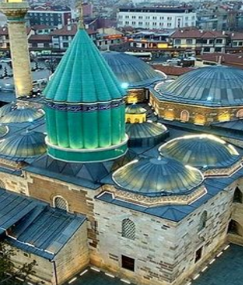
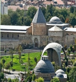
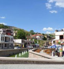

|
MEVLANA TÜRBESİ

Konya'da bulunan
eskiden Mevlana'nın
dergahı olan bir yapıdır.
1926 yılından beri
faaliyet gösteren bir
müzedir.
|
ALAADDİN CAMİ

Konya'da Aleaddin tepesi adlı höyüğün üstünde Anadolu Selçuklu Devleti devrinde şehrin ulu camisi olarak inşa ettirilmiştir.
|
SİLLE KÖYÜ

Sille beş bin yıllık tarihi yerleşim yeridir.Selçuklu ve Osmanlı dönemlerine ait camiler, hamamlar, çeşmeler, köprüler gibi Türk-İslam eserleri de bulunur.
|